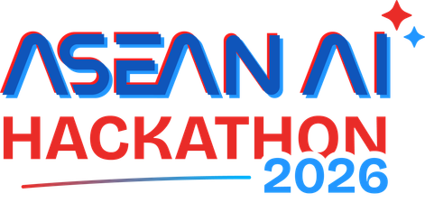

See what a decision will do before a city has to live with it.
Team ATLAN · Polytechnic University of the Philippines
ASEAN AI Hackathon 2026, Smart Cities track · Pilot city: Iloilo
Do not read the slide. Hold one beat, then open with the question.
Say: “What if we could see the consequences of a decision before a city pays the price for it?”
Then advance. Do not start with architecture, do not start with “we built a digital twin.”
What if a city could see what a decision will do, before it has to live with the result?
Today it cannot. Cities decide about roads, evacuation routes and transport without seeing what those decisions do to the people living there.
“Today, cities make decisions about roads, evacuation routes, transport and infrastructure without being able to clearly see what those decisions will do to the people living there.”
Pause. Let the room sit in it. This beat is empathy, not product.
Two problems sit underneath almost every bad urban decision.
Cities decide without seeing what happens next.
The information they rely on is fragmented, inconsistent, or out of date.
- A road is built.
- Traffic shifts.
- An evacuation route becomes harder to reach.
- Flood risk moves to a barangay that was never in the plan.
- The city learns the cost after the concrete is poured.
Cities should not have to wait for reality to tell them they made the wrong decision.
Do not say “the Philippines has no data.” The honest framing is fragmented, inconsistent, or hard to operationalize.
Speak the cascade as one continuous image, not as five bullets. Then land: “Cities shouldn’t have to wait for reality to tell them they made the wrong decision.”
Target 45 to 55 seconds for beat 1 in total. Protected beat.
“What happens if we put this here?”
MATRIX helps cities see the consequences of infrastructure decisions before those consequences become reality.
Not another static study that ages the day it is filed. A way to explore possible futures, and to understand who pays if we are wrong.
“So what if a city could ask, before it builds: what happens if we put this here?”
Pause, then deliver the thesis sentence slowly. It is the single line you most want the judges to repeat back.
Target 30 to 35 seconds. Protected beat.
Five steps, one simulated reality.
Simulate
Plain language, or a pin on the map.
Visualize
Watch the city move once that future exists.
Compare
Five dimensions score the same run.
Identify
Risks, and where our confidence is honestly low.
Act
A brief a planner can answer.
One kernel, one trajectory dataset, five scores that cannot contradict each other:
- Behavioral
- Social
- Economic
- Ecological
- Societal
Keep this beat plain. No SUMO, no Redis, no Azure. Those live in the appendix and in Q&A.
The one line worth landing: “five dimensions, one shared simulated reality, so the answers do not contradict each other.”
Compressible beat. If time is short, say only “Simulate. Visualize. Act.” and move to the demo.
Hard protected beat. 20 to 30 seconds of video. Do not narrate the controls.
Scenario used: the Mandurriao school placement. See DEMO_SCRIPT.md for the live fallback path.
If Inspect lands on screen: “That number isn’t a guess. Equation, named datasets, computed confidence. The AI narrates. It does not invent the figure.”
This is not just an idea.
- Runs today
- Unified simulation kernel, five impact modules, streaming API and Deck.gl frontend, live for judges and planners.
- Grounded in Iloilo
- Open-data foundation across 180 barangays and 5,680 priced parcels.
- Traceable
- Every scored number opens in Inspect: equation, named datasets, computed confidence.
- Gated
- 254 passing automated tests across kernel and API, plus two merge gates that block unprovenanced results.
And what we will not claim.
- The behavioral validation gate is built. Its headline number is withheld until demand is calibrated.
- Flood back-testing is staged and not yet run against a real 2024 satellite extent.
- No city planner has formally signed off yet. That partnership is our next step.
False precision is the real risk. Honest confidence is the feature.
Every figure here maps to CLAIMS.md. 254 = 190 kernel plus 64 API passing tests.
“Our empirical validation gates are built. We deliberately withhold the behavioral headline until demand is calibrated, because publishing a confident number off uncalibrated demand would break our own glass-box rule.”
Never say: validated by CPDO, a published RMSE, or an invented accuracy percentage.
Target 50 to 60 seconds.
We are not claiming the whole staircase. We are showing the first flight.
Simulation
Explore what a decision would do.
We are hereData
Connect to cleaner, continuously updated urban data.
Digital twin
A living model that learns from the city itself.
Decision intelligence
A regional way for cities to learn before they act.
The data gap is not an embarrassment. It is the reason the product has to climb.
“Today, MATRIX demonstrates what is possible through simulation. Tomorrow it can connect to continuously updated urban data. Eventually, the city itself becomes the feedback loop.”
Steps 2, 3 and 4 are vision, future tense only. Compressible beat, 30 to 40 seconds.
Learn before they act.
Every road, school and flood wall is a decision about someone’s life.
Team ATLAN · matrix-atlan.vercel.app · Thank you
Hard protected beat. Slow down. This is the last thing they hear before scoring.
“We want Southeast Asian cities to stop learning from disasters, congestion and failed infrastructure after the fact. We want them to learn before they act. Because every infrastructure decision is ultimately a decision about someone’s life.”
Then the soft ask: advance with us, from a working Iloilo pilot to the decision-intelligence layer ASEAN cities deserve.
Appendix A1
One kernel feeds five modules.
Orchestrator
Azure OpenAI gpt-5.4 turns a natural-language ask or a map pin into a scenario. It never originates a number.
Simulation kernel
SUMO via TraCI, a pre-warmed persona pool and a bias auditor, run as a delta against a nightly baseline.
One trajectory dataset
A single per-agent record of the simulated city. Every dimension scores this same reality.
Synthesis and playback
Citation-guarded narration, streamed over WebSocket into Deck.gl playback and the Inspect drawer.
Pull this up only if a judge asks how it is built. The point of the diagram is the middle box: one trajectory dataset is why five dimensions cannot contradict each other.
Appendix A2
No number ships without its provenance.
equation_id
The exact equation from the methods ledger that produced the value. Locked, versioned, reviewable.
input_dataset_ids
Every named dataset that fed the calculation, with its vintage and licence.
confidence
Computed from data coverage and quality, never a guessed label. Low confidence suppresses the point estimate.
A merge gate enforces this in the build. If a result cannot resolve its equation, its datasets and a computed confidence in the Inspect drawer, it does not ship.
This is the answer to “how do we know the AI is not making it up.” The LLM narrates and cites. It does not originate a figure.
Appendix A3
Validation, stated honestly.
| Gate | What it tests | Status |
|---|---|---|
| VAL-01 | Behavioral travel times against the Calderon Iloilo corridor study. Threshold is a normalized RMSE of 0.30, per FHWA guidance. | WITHHELD |
| VAL-02 | Flood extent against a real 2024 Sentinel-1 observation, scored by intersection over union. | NOT RUN |
| VAL-03 | Mode share held within tolerance of the anchored city baseline. | ENFORCED |
The machinery for all three is implemented and tested. VAL-01 is withheld rather than published because demand volume is not yet calibrated, and a confident number off uncalibrated demand would break our own glass-box rule.
“Withheld” is the correct word, not “failed” and not “not validated.” The gate exists and runs. We are choosing not to publish an uncalibrated headline.
Appendix A4
Architected for a 90 second answer.
- Target
- 90 seconds end to end, from question to a narrated five-dimension result.
- How
- Pre-warmed persona pool, delta simulation against a nightly baseline, five modules in parallel, progressive streaming to the UI.
- Repeat runs
- Served from the trajectory cache, effectively instant.
- Cold runs
- Can exceed the target. We quote it as an engineered target, not a measured guarantee.
Do not claim “always under 90 seconds.” If you have a live measured figure from the day, quote that figure instead.
Appendix A5
Iloilo is the beachhead, not the ceiling.
Iloilo
Working pilot on an open-data foundation, with a planner feedback loop built into the product.
Philippine cities
Geographic scaling is an API-level change: swap the OSM bounding box and the local data layers.
ASEAN
Behavioral scaling is prompt-level: reweight the persona archetypes to the city’s own mode share.
The engine is deliberately city-agnostic. Nothing in the kernel hard-codes Iloilo.
This is a path, not a deployment claim. Never say MATRIX is already running across ASEAN.
Appendix A6
What it is made of.
- Simulation
- Eclipse SUMO via the TraCI Python API
- Language model
- Azure OpenAI gpt-5.4, orchestration and synthesis
- Backend
- FastAPI with a progressive WebSocket stream
- Retrieval
- ChromaDB GraphRAG corpus, ingested at startup
- Data
- Postgres with PostGIS, Redis for pools and caches
- Frontend
- Next.js 14 with Deck.gl animated playback
- Deploy
- Vercel for web, Hugging Face Spaces for the API
- Forecasting
- XGBoost baseline forecaster
Only open this if asked directly about the stack. It is a credibility card, not part of the spoken arc.